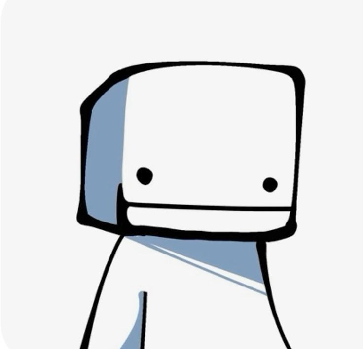

A PERSONAL FREQUENCY · EST. ONLINE
NEGUSBRINE.
A small signal in a very loud internet. A place for questions, experiments, half-finished ideas and things worth getting curious about.
TRANSMISSION ACTIVE · BUILT WITH CURIOSITY
ARCH BTWBTW, I use Linux.
STATUS / ONLINESomewhere on the internet

NEGUSBRINE / ONLINE
01 — THE HUMAN BEHIND THE TAB
Not a finished product.
CURIOSITY OVER CERTAINTY
I like pulling at the threads of things — ideas, systems, beliefs, and the technology we build around them.
This is my little corner to collect what I am learning, make things, ask better questions and occasionally disappear down a very specific rabbit hole.FREQUENCIES I TUNE INTO
ReligionPhilosophyIdeologyArch LinuxOpen sourcePythonArtificial intelligenceCybersecuritySelf-hostingHardwareGamingEntrepreneurship
02 — OTHER PLACES I EXIST
Find the signal elsewhere.
SAME HUMAN, DIFFERENT TABS
03 — OPEN TABS
Things currently on my mind.
Linux & Arch Linux
Open-source software
Programming / Python
Artificial intelligence
Cybersecurity
Self-hosting
Technology & hardware
Entrepreneurship
04 — CURRENT TRANSMISSION
At this point in time.
SUBJECT TO CHANGE
Learning. Building. Questioning.
Exploring open technology, building small projects, learning how systems work and following interesting questions wherever they lead. The internet is a pretty big place — might as well explore it.
05 — THE BACK CHANNEL
Talk to the little terminal.
PRESS / TO FOCUS
negusbrine@signal: ~
Connection established. Welcome, visitor.
Type help to inspect available commands.
guest@negusbrine:~$
help · about · interests · links · date · uptime · clear · sudo
06 — A MOMENT OF QUIET
Take a breath.
OPTIONAL AMBIENT SOUND
✧
Soft ambient driftA gentle, slow-moving soundscape. Starts only when you ask.
GENERATED LOCALLY IN YOUR BROWSER · NO AUDIO FILES OR EXTERNAL STREAMS